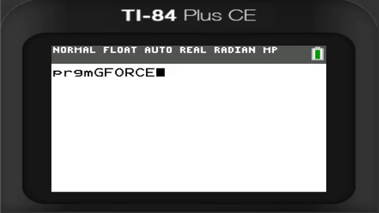
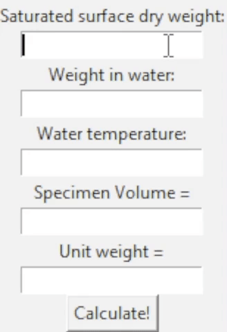

The Coding Journey
Begin Here
I began coding in 2014 using Codecademy when I was a freshman in high school, which I found by Googling "Duolingo but for coding" because I was going through a Linguistics obsession and was using Duolingo to learn French at the time, but I was also interested in computers and wanted get into programming. It seemed that they had just released a new Python 3 course because it was the one they recommended to start with, so I started with that. It took me through the basics of programming in general, but limited to the world of Python. I ended up finishing the whole thing in two months, but unfortunately all of the projects I made for it were lost because they were on an older computer and because Codecademy overhauled their courses, including the Python one, several times over the years.
The only memorandum that I have from that time was a picture of the cracked screen on my All-In-One computer from back then showing the completion page that I posted to my Instagram (Coincidentally almost 9 years ago to the day as of writing this on March 15, 2023):
I stopped learning anything that summer but then I got back into it for a little bit with their Hour of Code lesson from that year, which involved making your name appear as these colored balls that move when you mouse over them in HTML, CSS, and JavaScript. It was kinda lame though because you didn't actually write any of the code, you just customized the text and color. It looked like this:
Tap or mouse over the lettersJavaScript code courtesy of Codecademy
I remember eventually trying out the other courses on Codecademy like their Ruby (literally just because I thought the name was nice) and JavaScript courses, but I didn't get very far into either of them and didn't retain much.
The Big Break
I stopped seeking new knowledge in the world of programming for the rest of high school and most of college as I was knee-deep in an obsession with languages and Linguistics. However, when I took Algebra II in my sophomore year of high school, I realized that the programmatic thinking I picked up from learning to program applied really well to math and I flew through that class and passed with flying colors.
Not only that, I realized that you could write programs on the TI-84 calculators we used in school, and since I had my own (courtesy of my sister who stole it from school oops), the programs couldn't be wiped out by my teachers. This was especially useful in Physics I and II as a lot of the work was just plugging numbers into formulas.

Not sure why the answer is so inaccurate here, but it worked fine on my own calculator. I blame the floating point math implementation on the emulator I used to make this GIF.
During college, I didn't really touch coding at all as I too busy pursuing a degree in Linguistics at The University of Texas at Austin, however I did breifly get back into it during the second semester of my junior year of college. Unfortunately that was also the year that the pandemic hit and I left all schooling whatsoever due the chaos it caused.
Getting Back Into the Swing of Things
Two years later, I was working at a civil engineering firm in their soil and concrete lab as a materials tester and I came across the same problems that I did when I was in highschool physics—a lot of repetitive calculations using math that was mostly done by hand/calculator. I realized that I especially could automate the calculation of one of the more involved calculations as it involved referencing a chart that had the density of water at various temperatures (which I don't think you can calculate, it's all measurements done by hand that had been compiled by scientists over time).
I thought about how I could easily write a program in Python to make the process easier, so I got this Python IDE app for iPhone called Pythonista and wrote it in about an hour. It made my life at work so much easier to be able to cut down the ~5 minutes it takes to do that calculation manually to just a few seconds by using the program I wrote. After I showed my supervisor the program, and he tested it himself, he approved of it and I had free reign to be able to use it on the clock.
This is the port that I made so it would work on my computer using tkinter for the GUI, I lost the original code I made on Pythonista D:

Word got around the lab that I had automated it, so my coworkers started coming to me use my program since it was that much easier. I kept developing the app because I realized that, while I could work comfortably within the command-line interface, my coworkers who weren't as technically inclined were not. So I worked on upgrading the user interface into a graphical one that was a lot easier on the eyes and a lot easier for people other then me to be able to use it.
The New Beginning
After a brief stint working in a dental office where I realized that the most fun I had on the job was when I fixed the computer problems we had at the office such as when the printer stopped being recognized on the computers (I hate printers), I started to get the idea of "I could probably do something like this for a living," so I decided I'd get into IT (even though I really just wanted to code stuff).
So I ended up doing IT for a small local surveying company and since they had a website that was broken, I took it upon myself to get back into learning more coding and got back on Codecademy to take their HTML course so I could fix their website. My efforts took the website from looking like this:
To looking a little more like this:
 Which I admit that somebody with more experience could have done way better, but for my first real attempt at working with HTML and CSS on a website that would be seen by real clients for a real company, I thought it was a good start. Plus a lot of it was done by my superior literally watching me change the HTML in front of her, which was surprisingly nervewracking!
Which I admit that somebody with more experience could have done way better, but for my first real attempt at working with HTML and CSS on a website that would be seen by real clients for a real company, I thought it was a good start. Plus a lot of it was done by my superior literally watching me change the HTML in front of her, which was surprisingly nervewracking!
I eventually was let go from that company and had some free time in unemployment, so when YouTube started recommending me Gamedev content, with what I knew up to that point, I was like "I could probably do something like that."
Adventures in Gamedev
I started trying to make a game, initially in Unity, but C# seemed a bit too complicated for what I knew thusfar, so I was introduced to Godot and quickly moved on to that engine (shout out to Nixon) because the scripting language, GDScript, is basically just Python and it was incredibly easy to just start writing in it once I got a grasp of the syntax. I had an idea to make a basic top-down zombie shooter in the vein of those old flash games just to get my feet wet in this new world, so I literally just looked up "top down shooter tutorial in Godot" on YouTube and came across this video by Endoparasitic developer, Miziziziz, who made a video on just that. Thankfully Miziziziz is a really good educator and gave just enough instruction in the video to get started, and down the rabbithole of gamedev I went.
Some very compressed footage of the gameplay

I'll spare the details as a lot of it was just googling systems that I needed for my game, watching tutorials for code that I can incorporate into my game, and a lot of trial and error. I worked on it for a good three weeks straight before I came to the realization that I didn't know enough about coding to see this to the end. While I had a lot of fun working on it and especially working with the sounds and music of the game, I just didn't really know what I was doing, and when I was looking at other people's codes of how they solved provlems, I realized that I didn't know really basic data structure things like what an array was or how to implement a queue. Thankfully, the algorithm gods came in clutch again.
The Present
I was just mindlessly scrolling through Tiktok (I'm Gen Z) when I came across this one video that really spoke to me for some reason:
Harvard was my dream college when I was in grade school, so that's probably why it really stood out to me to find out at they offer their own Computer Science courses for free online, combined with the fact that I just stopped working on my game so that I could get a better knowledge within coding, I took it as a sign from the universe to start the CS50x course, and so I did.
Nearly two months later, I gotta say that it's one of the best classes I've ever taken (and I was lucky to have some incredible teachers in grade school and amazing professors in college). It's honestly unbelievable to me how it's free and how passionate Professor Malan is during the lectures. What I've learned in this course is something I hope to use forever and I've already used the skills I picked up to help people such as when I was asked to help webscrape data or to prove that a math problem on the ACT had the wrong answer marked as correct on their answer key.
The Future??
Now that I'm nearing completion of CS50x, I hope to get a job working in tech where I get to code all day, especially if it means getting to work with like minded people. Quite frankly, I'm sick of working customer service jobs because I seriously love building things and solving problems without having to interact with people who view me with less respect than the ground they walk on.
I'm probably still a long ways from that as I have no completed projects under my belt, but I really look forward to it and I'm excited to see what the future holds for me now that I know for sure that this is what I want to do with my life. I'm epecially excited to learn more since there are a few open-source projects I've been eyeing since I was a teenager that I want to contribute to when I get more knowledge.